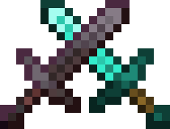

Істоти сутінкового лісу
The Twilight Forest
- - бос.
- Курсив - не повністю розроблений моб.
Привіт, не заважаю?
Помітив що ти вже довгенько на сайті. То, може, якщо інформація була корисною, розкажеш про сайт другу?
Істоти сутінкового лісу
The Twilight Forest